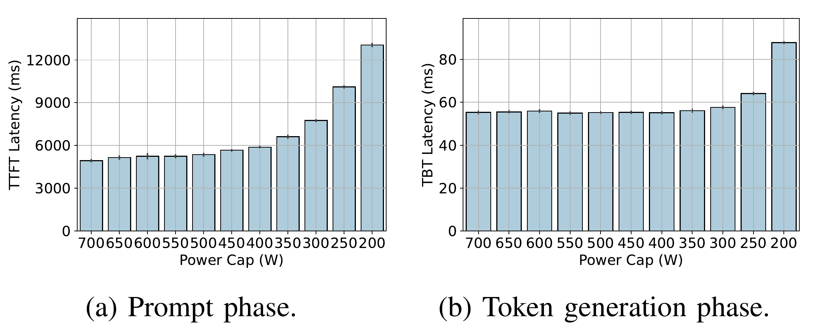
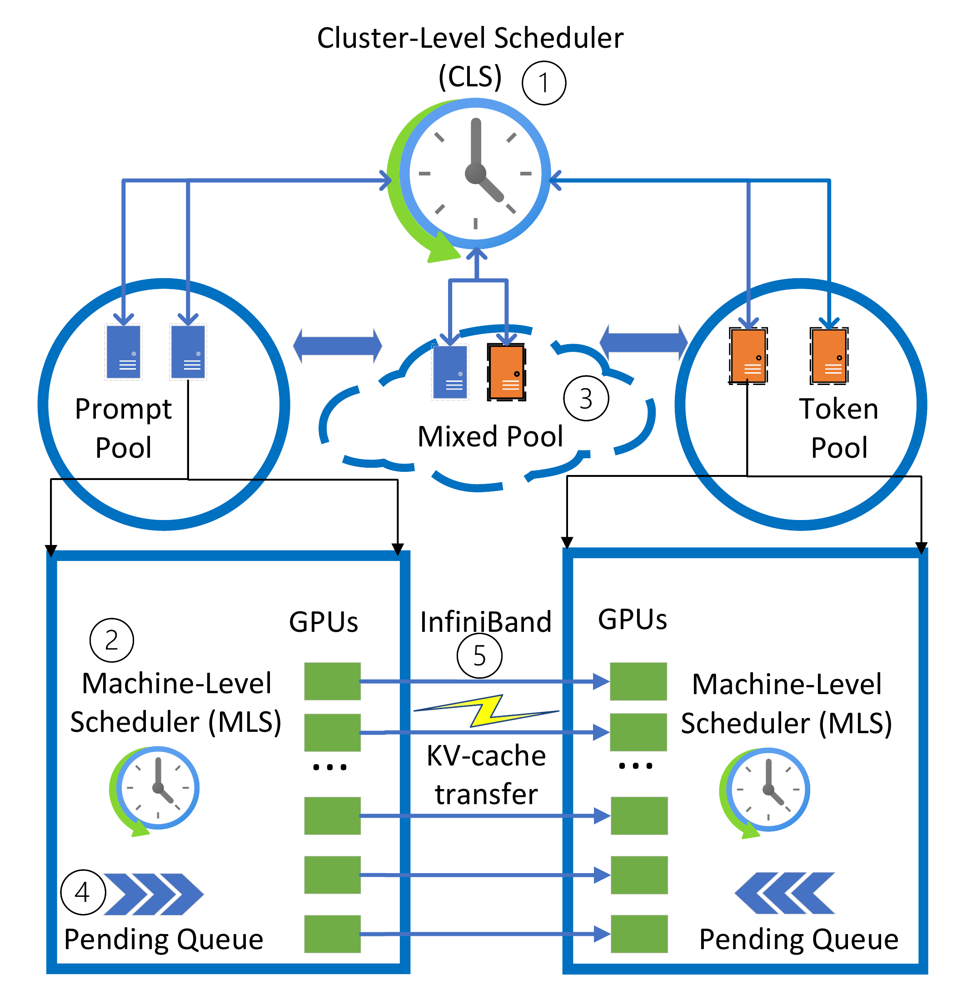
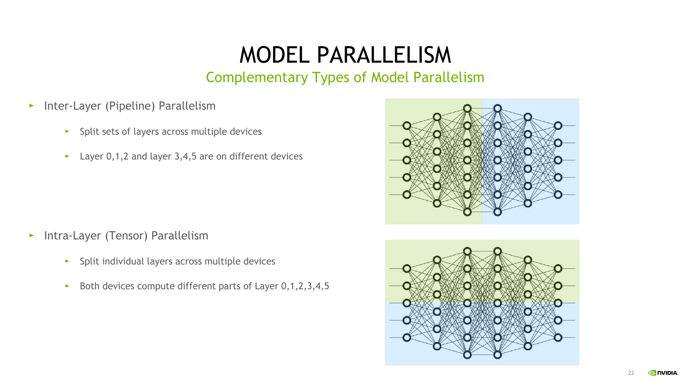
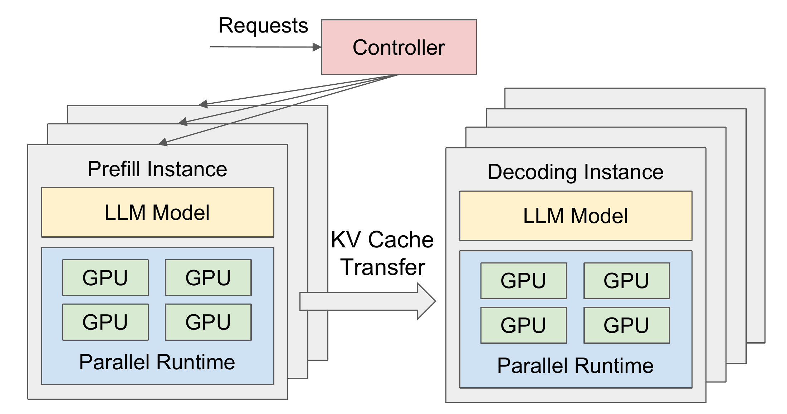
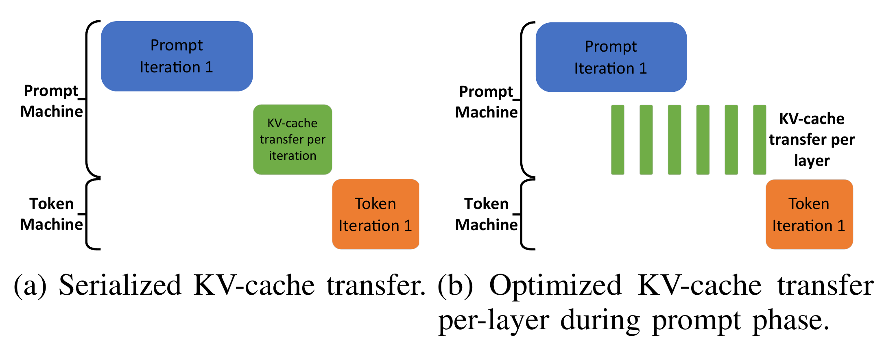
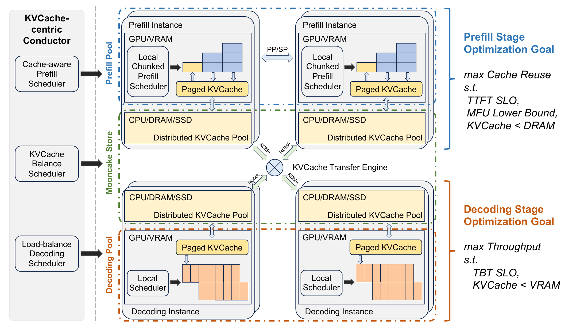
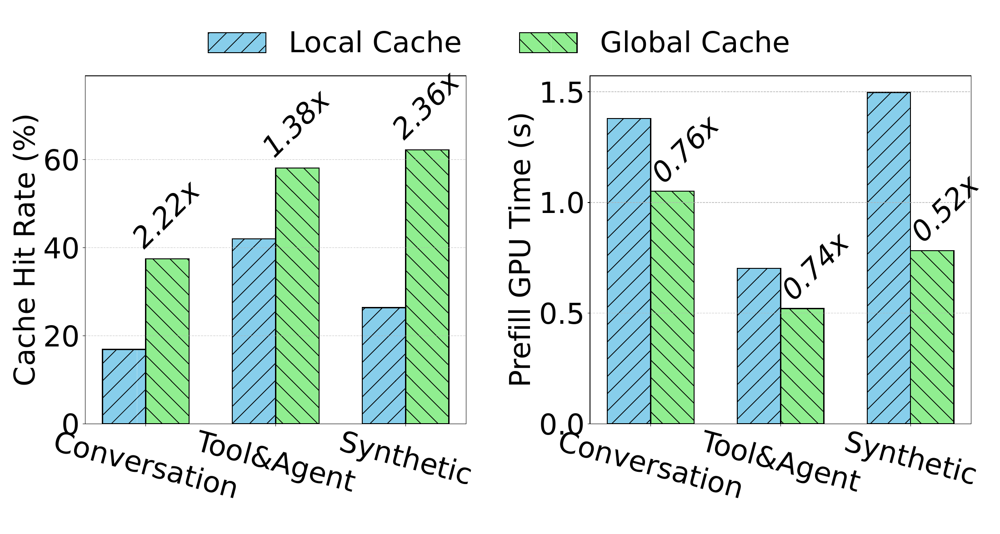

LLM 推理系统中的调度与资源管理 。本文结合 Splitwise、DistServe 与 Mooncake，讨论阶段分离带来的配置空间，以及状态传输、缓存复用和请求路由的成本。前置了解推荐阅读：LLM 推理调度：如何兼顾吞吐量与响应延迟
分块 Prefill 可以限制长输入对一次迭代的影响，但只要 Prefill 和 Decode 仍运行在同一个实例上，两阶段就需要共享硬件、显存以及一套模型并行配置。但它们偏好的配置不同，单靠调整执行顺序就难以同时满足两边的要求。Prefill–Decode 分离由此把问题推进了一层：为两阶段分别配置执行资源。[1][2][3]
独立配置也增加了一条必须完成的数据传递路径。Prefill 生成的 KV cache，要交给另一组执行资源继续 Decode。一旦这些状态还能跨请求复用，缓存在哪里、是否值得搬运，会反过来改变请求应该被送到哪里。[4]
为了理解 P/D 分离，我们将沿着 “执行资源解耦 → 资源配比与布局 → KV 交接 → 缓存复用与路由” 这条因果链展开。Splitwise、DistServe 和 Mooncake 分别为这几个问题提供了有代表性的设计与证据。后续我们用这些问题组织比较，判断分离带来的收益在什么条件下能够覆盖新增成本。
1. 阶段分离：为两类计算独立配置资源
1.1 共置部署为何限制两阶段的配置
一次自回归请求先通过 Prefill 处理输入、建立 KV cache，再通过 Decode 持续生成后续 token。Prefill 可以同时处理多个输入位置，小批次 Decode 则通常更受访存限制。两阶段在批次、计算能力、内存带宽和状态容量上的需求因此而产生不同。Splitwise 通过模型测量与生产请求轨迹分析，研究了这种差异对功耗、成本和集群设计的影响。[1]

功率上限由 700 W 降到 350 W 时，右图的 Decode 生成间隔几乎不变，而左图的 Prefill 首 token 延迟已经增大。进一步降到 200 W，Decode 延迟也明显上升。这说明两阶段对功率预算的敏感程度不同，为分别设置功率上限提供了测量依据。[1]
共置部署需要在同一个实例内协调这些需求。分离之后，可以分别决定 Prefill 与 Decode 使用多少实例、每个实例怎样拆分模型，以及每轮组织多大的批次，硬件类型也可以独立选择。[1][2]
1.2 Splitwise：资源池与两层调度如何配合
Splitwise 将机器组织成三个资源池：Prompt Pool 负责 Prefill，Token Pool 负责 Decode，Mixed Pool 中的机器同时承担两类工作。各机器都预先加载模型，资源池决定它们当前承担哪一阶段的计算。集群级调度器（CLS）管理这些资源池并分配请求，机器级调度器（MLS）组织本机的实际执行。[1]

沿着 Prompt Pool、KV 传输和 Token Pool，可以把正常的阶段分离流程分成三步：
- 同时选定两阶段的机器： 请求到达后，CLS 根据待处理 token 数量衡量队列长度，为它选择队列较短的 Prompt 机器和 Token 机器。两台机器在此时就一起确定，后续 KV 传输也就有了目的地。
- 在 Prompt 机器上处理输入： 该机器执行 Prefill，生成首个输出 token 和对应的 KV cache，并将 KV 状态传给选定的 Token 机器，InfiniBand 连接承担这条数据路径。
- 在 Token 机器上继续生成： Token 机器利用接收的 KV 逐步生成后续 token，直到请求结束。它采用连续批处理，在每轮执行时组织当前的生成请求。[1]
提前选定 Token 机器，还使较长输入的 KV 可以在 Prefill 期间按层传出，与后续层的计算重叠。 CLS 负责选择执行目的地，请求进入本机队列后，MLS 则决定它在哪一轮、与哪些请求一起执行。MLS 持续跟踪队列和 GPU 显存，并定期将状态上报给 CLS，供后续路由使用。三类机器采用不同的批处理策略：[1]
| 机器类型 | MLS 的执行策略 |
|---|---|
| Prompt 机器 | 按先来先服务的顺序处理输入，并限制合并批次的输入 token 总量。 |
| Token 机器 | 按先来先服务的顺序接纳生成工作，在显存允许的范围内尽量扩大 Decode 批次。 |
| Mixed 机器 | 混合执行两阶段，优先处理新输入以满足 TTFT 要求。资源不足时可以抢占 Decode，同时提高等待较久的生成请求的优先级，并限制每个请求被抢占的次数，避免生成请求长期得不到执行。 |
Mixed Pool 用于缓解服务中的资源失衡问题。例如，Token Pool 的队列超过阈值时，CLS 会先尝试把生成工作分配到 Mixed Pool。如果那里也没有余量，就从 Prompt Pool 调入机器，让它临时承担 Decode，并进入混合执行状态。同理，Prefill 压力过大时，也可以反向借用 Token 机器。[1]
进入 Mixed Pool 的机器仍保留原来的资源池身份。临时承担的另一阶段任务处理完后，它就回到原来的池。如果负载长期偏离初始预期，Splitwise 才会以较低频率重新划定机器的阶段角色。这分别对应短时借用和长期调整资源配比。这种动态调整可以缓解一侧排队、另一侧有余量的情况，Prefill 和 Decode 各需要多少机器、选择什么硬件，取决于请求的输入输出特征，以及服务要满足的延迟与成本目标。[1]
2. 资源配置：在 SLO 约束下寻找有效容量
2.1 输入输出长度不足以决定资源配比
长输入主要增加 Prefill 的计算负担，持续生成则更依赖 Decode 的服务能力和 KV 容量。资源配比需要结合输入输出长度分布、请求到达速率，以及目标模型与硬件上的执行成本、批次效率和缓存命中情况。同时，长尾请求对延迟和 KV 占用的影响也应纳入考虑，不能只按平均 token 数量分配机器。[1][2][4]
这也限制了对硬件的简单判断，更高峰值算力、更大显存、更高带宽与更低价格，分别作用于不同瓶颈。Splitwise 比较同构、异构和功率受限配置，得到的是特定负载和约束下的设计选择。[1] 因此，比较这些配置还需要统一的服务评价标准：在给定资源预算下，系统能承接多大的请求负载，同时满足首 token 延迟和后续生成间隔的要求。[2]
2.2 Goodput：衡量延迟目标下的服务容量
资源更多、批次更大，可能提高吞吐量，但排队也可能让大量请求超出延迟要求。DistServe 因此围绕 goodput 优化：给定 TTFT、TPOT 目标与要求达到的 SLO 满足比例，寻找系统每张 GPU 能支持的请求到达速率。[2] 例如，假设相同 GPU 预算下，方案甲每秒完成 100 个请求，但只有 70% 达到约定延迟。方案乙每秒完成 90 个，却有 95% 达标。以 90% 的达标率为要求，乙能够满足服务目标。甲的吞吐量虽然更高，却未达到延迟要求。
由此，资源配置的目标变得明确：在固定成本或 GPU 预算下，最大化满足延迟约束的服务能力。 两阶段单独跑得多快只是中间量，最终还要看它们组合后能否稳定处理同一股请求流。[2]
2.3 并行计划与节点布局需要一起决定
阶段分离允许为 Prefill 和 Decode 分别选择模型并行方式。张量并行（TP）拆分层内计算，可能缩短一次前向的时间，同时引入设备间通信。流水线并行（PP）按层划分执行阶段，需要持续供给工作以减少空闲，多个完整模型副本则提供服务并发。PP 将不同层分配给不同设备，TP 让多个设备共同计算同一层。两者可以组合：先按层划分流水线阶段，再在每个阶段内部采用 TP。

并行方式也决定了 KV 需要在哪些 GPU 之间传输，因此 DistServe 在配置两阶段资源时，会同时规划模型如何切分、各部分部署在哪里。当跨节点带宽较低时，它通过 PP 将两阶段的模型按相同的层边界分段，再把对应层段放在同一节点的不同 GPU 上。这样，每个 Prefill 段产生的 KV 都能通过节点内的高速连接交给对应的 Decode 段，减少跨节点传输带来的等待。[2]

请求先由控制器（Controller）分配给 Prefill 实例处理输入，再交给 Decode 实例继续生成。两类实例通过 KV cache 传输衔接。每个实例都持有一份完整模型，内部的 Parallel Runtime 负责多 GPU 并行执行。前述布局优化进一步决定这些 GPU 放在哪些节点上：将两阶段对应的层段放在同一节点的不同 GPU 上，就能让 KV 交接利用节点内连接。[2]
这一步也说明 P/D 分离不以异构硬件为前提，它关注的是同一资源预算内，阶段独立配置与通信布局怎样改善 SLO 下的容量，而不是通过更换 GPU 型号解释全部收益。[2] 无论采用什么计划，Prefill 与 Decode 都仍然依赖同一份请求状态。要判断这种布局是否划算，还需要把那条连接两阶段的 KV 数据路径算清楚。
3. KV 交接：传输成本怎样进入请求延迟
3.1 用具体模型估算 KV 传输量
对于各层结构一致、保留完整历史的标准 KV cache，设层数为 L，每层 KV head 数和维度分别为 H_KV，d，已缓存 token 数为 S，每个元素占 b 字节。以 OPT-6.7B 为例，取其配置中的 2,048 个最大位置作为已缓存 token 数，并假设 KV 使用 FP16（未计入分块元数据、填充、额外复制等开销）：
M_KV ≈ 2（Key 和 Value）× L × H_KV × d × S × b
= 2 × 32 × 32 × 128 × 2,048 × 2 字节
= 1,073,741,824 字节 = 1 GiB
若 Prefill 与 Decode 的对应层段位于不同节点，KV 交接就会受到网络链路约束。以 Intel E810-CQDA2 以太网适配器 的一个 100 Gb/s 端口为例，按标称线速换算为 12.5 GB/s，纯数据的传输时间下界约为：
T_payload,min ≈ KV 数据量 / 端口线速
= 1,073,741,824 字节 / 12,500,000,000 字节/秒
≈ 0.086 秒 ≈ 86 毫秒
协议开销、排队、内存拷贝和布局转换都会增加实际耗时，若传输与 Prefill 重叠，用户可见的等待可能小于完整搬运时间。[1]
3.2 按层传输如何缩短交接等待
对于kv cache的交付问题最直接的实现是等 Prefill 全部完成，再发送 KV，Decode 等接收完后开始执行（计算与传输串行发生）。Splitwise 进一步采用按层异步传输：某一层的 KV 生成后就开始发送，同时继续计算后面的层。[1]

从而减少 Prefill 完成后仍然暴露在关键路径上的传输尾部。KV 字节数没有因为重叠而消失；网络、内存拷贝与同步也仍然消耗资源。输入规模、计算时长与链路能力共同决定能覆盖多少传输，细粒度交接还会带来同步开销。Splitwise 因而对不同输入规模采用不同传输方式。[1]
3.3 首 token 返回时机改变延迟归属
在常见执行方式中，Prefill 已经能够产生首个输出 token。如果系统在 Prefill 侧立即返回它，随后发生的 KV 交接就可能表现为首个与第二个 token 之间的长间隔。如果等状态交接完成才返回首 token，同一段等待又可能计入 TTFT。Splitwise 对串行交接的讨论正涉及首 token 之后、下一次生成之前的这段依赖。[1]
因此，测量时需要同时记录数据传输了多久，以及用户多等了多久。前者描述数据路径，后者还取决于重叠、排队和响应策略。即使单请求的传输被充分覆盖，并发增大后网络仍可能饱和，重新成为可见延迟。[2]
到这里，KV 还是同一请求两个阶段之间的交接状态。如果它能够被其他请求复用，问题就会进一步从“怎样传得更快”扩展为“哪些计算值得省掉，以及为此应该到哪里取状态”。
4. 缓存复用：KV 位置怎样影响请求路由
4.1 Mooncake：从前缀命中到实例选择
多轮对话、共享系统提示词以及针对同一文档的重复提问，可能包含完全相同的输入前缀。若模型与执行条件兼容，就可以复用这段前缀的 KV，减少重复 Prefill。Mooncake 把可复用 KV 组织为跨节点存储资源，并让 Conductor 在调度时同时考虑前缀命中、数据位置与执行负载。Prefill 池和 Decode 池之间因此多了一层共享状态管理。[4]

Conductor 先选择 Prefill 和 Decode 实例：选择 Prefill 时比较各处的前缀命中、取回缓存所需的传输和排队时间。选择 Decode 时还要看生成负载能否满足 TBT 要求。Mooncake Store 是分布在各节点 DRAM、SSD 等资源上的 KV 缓存池，Transfer Engine 负责通过网络搬运缓存块[4]
- 读取旧前缀： 若相同 token 前缀的 KV 已在缓存池中，选定的 Prefill 实例将它取到 GPU，没有命中时，这一步跳过。
- 补算新输入： Prefill 只计算未命中的后续 token，输入较长时可分块执行，并把新产生的 KV 写入缓存池。
- 交接本次请求的状态： Prefill 逐层生成的 KV 经 Transfer Engine 异步送到预先选定的 Decode 节点内存，传输可与后续 Prefill 计算重叠。目的地最终需要收齐该请求继续生成所需的 KV。
- 继续生成： Decode 节点将 KV 载入 GPU 后，把请求加入连续批次，逐 token 生成输出。[4]
第 1 步复用的是旧请求留下的共同前缀，用于省去重复 Prefill。第 3 步交接的是当前请求的生成状态，用于让另一实例接续 Decode。两个状态的约束也因此不同：Prefill 要在 TTFT 和计算利用率要求下尽量复用缓存，Decode 则要在 TBT 与显存容量限制下组织生成批次。[4]
4.2 为什么队列最短未必最早完成
一个空闲节点可能需要从头计算长输入，同时另一个节点虽然在排队，却已经缓存大部分前缀，第三个节点则需要从远端获取状态。比较目的地时，至少要同时考虑等待、未命中部分的计算和额外读取。
下面用假设数字展开这个判断（为了便于比较，暂时把三项成本当作不能重叠，并假设其余开销相同）：
| 候选位置 | 排队 | 未命中部分的计算 | 额外获取缓存 | 预计完成时间 |
|---|---|---|---|---|
| A：空闲，无可用前缀 | 0 ms | 120 ms | 0 ms | 120 ms |
| B：有本地前缀，队列较长 | 45 ms | 20 ms | 0 ms | 65 ms |
| C：从远端读取前缀 | 5 ms | 20 ms | 55 ms | 80 ms |
在这些假设下，B 虽然队列更长，却最早完成。如果 B 的排队再增加 100 ms，选择就会改变。由此可以看出，队列长度、缓存命中率或传输距离都只能描述部分成本，路由真正需要估计的是请求到达该位置后的完成时间。Mooncake 的缓存感知调度会结合输入长度、前缀匹配与负载估计执行成本，同时处理共享缓存引入的热点。热门前缀只存一份，可能把大量访问聚集到同一节点。增加副本能分散访问，却会占用更多容量。他们还采用提前拒绝的接纳控制，避免预计无法满足 SLO 的请求继续加重过载。[4]
这使缓存策略与资源配比重新发生联系：更多命中可能降低 Prefill 的计算需求，但复制、远程读取与状态交接又会占用内存和网络。共享缓存的价值必须沿着完整路径判断。[4]
4.3 全局缓存实际节省了多少计算
Mooncake 的缓存消融实验提供了一个具体观察。其使用 10 个 Prefill 节点，每个节点都有 300 万 token 的缓存容量，并把请求输出限制为 1 个 token，以隔离后续 Decode 的影响。Local Cache 只能访问本节点缓存，Global Cache 可以跨节点共享并主动迁移。对照中的本地方案也会优先路由到前缀匹配较多的节点。[4]

在 Synthetic 负载中，全局缓存的命中率约为本地缓存的 2.36 倍，Prefill GPU 时间降至约 0.52 倍。这说明，在该容量、节点数和请求分布下，更大的可访问缓存范围确实减少了重复计算。工作还分别报告 Kimi 生产部署经验，以及使用具有 LLaMA3-70B 结构的 dummy model 和回放负载开展的实验。[4]
5. 把阶段资源与 KV 状态协同调度
Splitwise、DistServe 和 Mooncake 强调的决策不同，它们的实验硬件、模型、负载与 SLO 也不完全相同。我们比较时定位各自改变了哪项成本，以及什么条件会限制这种改变。
| 工作 | 本文关注的核心决策 | 主要利用的机会 | 收益需要覆盖的成本 |
|---|---|---|---|
| Splitwise[1] | 阶段匹配的资源池与硬件配置 | 两阶段对计算、带宽、容量和功耗的需求不同 | 资源池失衡与 KV 交接 |
| DistServe[2] | SLO 下的资源、并行计划与实例布局 | 阶段独立配置可以提高单位 GPU 的有效服务容量 | 通信约束、排队与资源投入 |
| Mooncake[4] | 全局 KV 复用与缓存感知路由 | 跨请求重复前缀可以减少 Prefill 计算 | 缓存容量、远程访问、热点与预测误差 |
这些方向可以组合。分块 Prefill 改变每轮执行多少工作，P/D 分离改变工作由哪些资源执行，前缀缓存减少真正需要执行的输入工作。图 7 的 Mooncake Prefill 池中仍存在分块调度，就是这种组合的具体例子。[3][4]
把三项工作连起来看，优化的对象已从两阶段各自的执行效率，扩展到一次请求经过的整条资源与状态路径。独立配置让两阶段各用适合的资源，也让 KV 交接进入关键路径。共享缓存减少重复计算，又使状态位置影响请求路由。每增加一种调度自由度，就多了一项需要协调的约束。[1][2][4]
由此可见，判断分离是否值得，关键是新增的配置空间能否抵过 KV 搬运与资源池失衡的成本。单独加快 Prefill 或 Decode，不一定能改善整段请求的等待。提高缓存命中率，也不代表远程取回 KV 一定比重新计算划算。真正有说服力的结果，是在相同资源预算、请求轨迹和延迟目标下，系统能让多少到达请求达标，并说明拒绝了多少请求。[2][4]
输入与输出长度、到达强度、共同前缀的多少，都会移动系统的瓶颈。Splitwise 用 Mixed Pool 应对阶段压力变化，Mooncake 把缓存位置纳入路由。沿着这两点继续看，我更倾向于让资源池比例与 KV 放置随负载共同调整。把状态移动与阶段资源放进同一个调度问题，才是分离架构真正打开的空间。[1][4]
参考文献
- Pratyush Patel et al. Splitwise: Efficient Generative LLM Inference Using Phase Splitting. ISCA 2024. ↩
- Yinmin Zhong et al. DistServe: Disaggregating Prefill and Decoding for Goodput-optimized Large Language Model Serving. OSDI 2024, pp. 193–210. ↩
- Amey Agrawal et al. Taming Throughput-Latency Tradeoff in LLM Inference with Sarathi-Serve. OSDI 2024, pp. 117–134. ↩
- Ruoyu Qin et al. Mooncake: Trading More Storage for Less Computation — A KVCache-centric Architecture for Serving LLM Chatbot. FAST 2025, pp. 155–170. ↩
- Raul Puri. Megatron-LM: Training Billion Parameter Language Models with GPU Model Parallelism. NVIDIA GTC 2020. ↩